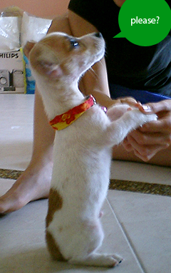

Te-Form Verbs, Please
A ‘No’ uttered from the deepest conviction is better than a ‘Yes’ merely uttered to please, or worse, to avoid trouble. - Mohandas Gandhi
Te-form verbs, on their own, are a bit hard to describe. There are just so many different ways to use te-form verbs that te-form verbs themselves aren’t all that impressive. Here are some examples of things we’ll do with these so-called “te-form” verbs.
- Learn how to request / ask for something “please eat your sushi.”
- Learn how to add an “ing” to a verb. For example, eat vs. eating. The second one means you’re in the process of eating, right now.
- Learn how to say “try to do” something. “I will try to eat this sushi.”
- Learn how to say “it’s okay to do” something. For example, “it’s okay to eat that sushi.”
- And so much more! (Sounds like one of those TV commercials, right?)
We won’t cover all of these in this lesson because there are way more te-form conjugations than were listed above, but we will learn te-form to create a good foundation for learning everything else. On top of that, we’ll take a look at 〜ください (please do something) and 〜ている (in the process of doing _______).
Learning Te-Form Verbs #
Normally, learning te-form verbs is a hassle. Luckily for you, as long as you paid attention when learning ta-form (past tense casual verbs), this should be a cinch. Feel free to go back and review if you don’t remember the rules from that chapter. The rules for ta-form and te-form are exactly the same, except instead of adding た to the end of the verb, you add て. Simple, right? (Well, only if you remembered the ta-form rules).
Let’s take a look at the rules right here to give you a refresher. As usual, there are three kinds of verbs: Group 1, Group 2, and Irregular.
Group 1 Verbs #
Group 1 verbs will always have the most rules, but I guess that’s why they’re number 1. As mentioned earlier, the rules for these verbs are the same as ta-form verbs, except instead of た we’ll be using て. So far you don’t really know how and where te-form verbs are used, which is okay. At this point I want you to learn how to create te-form verbs, and then we’ll learn how to use them.
Dictionary form verbs end with different kana, and each ending has a different rule. I’m going to lay them out in a different order from the ta-form chapter, just to make sure you’re learning the actual conversions and not the order they’re put in.
う → って
買う（かう）→ 買って（かって）
会う（あう）→ 会って（あって）
く → いて*
書く（かく）→ 書いて（かいて）
歩く（あるく）→ 歩いて（あるいて）
* 行く（いく), like in the ta-form chapter, is a weird (but common) exception. 行く goes to いって and NOT いいて
ぐ → いで
泳ぐ（およぐ）→ 泳いで（およいで）
急ぐ（いそぐ）→ 急いで（いそいで）
す → して
話す（はなす）→ 話して（はなして）
つ → って
待つ（まつ）→ 待って（まって）
持つ（もつ）→ 持って（もって）
ぬ → んで
死ぬ（しぬ）→ 死んで（しんで）
ぶ → んで
遊ぶ（あそぶ）→ 遊んで（あそんで）
呼ぶ（よぶ）→ 呼んで（よんで）
む → んで
読む（よむ）→ 読んで（よんで）
飲む（のむ）→ 飲んで（のんで）
る → って
走る（はしる）→ 走って（はしって）
入る（はいる）→ 入って（はいって）
These should feel familiar because you’ve done them before. Go ahead and move on to Group 2 verbs when you feel like you have a good understanding (you don’t have to know them all, just understand them at this point).
Group 2 Verbs #
As usual, Group 2 verbs are a cinch. It’s just a matter of changing the る on the end to a て. That’s it.
食べる（たべる）→ 食べて（たべて）
考える（かんがえる）→ 考えて（かんがえて）
見る（みる）→ 見て（みて）
忘れる（わすれる）→ 忘れて（わすれて）
出る（でる）→ 出て（でて）
As long as you know which ones are Group 1, and which ones are Group 2, this should be very easy for you. Let’s move on to the last, irregular group.
Irregular Verbs #
Irregular verbs, as you know by now, mostly consist of pure memorization. No exception here, except you can pull a bit from the ta-form irregular verbs.
する → して
来る（くる）→ 来て（きて）
ある → あって
行く（いく） → 行って（いって）
You’ll probably have to spend a little bit of time here to remember which one is which, but once you’ve got a general idea on these I’d like you to move on to the next section. It’s much easier to use something if you know how it is used.
Puh-lease! #
It’s about time you learned how to request something. In this short section, we’re going to learn about ください. When added to a te-form verb, it means “please do ______.” For example:
すしを食べてください （すし を たべてください）
Please eat (the) sushi東京に行ってください （とうきょう に いってください）
Please go to Tokyo
Go ahead and pull out your passion list, let’s do a little exercise. You may have to refer to one of the verb lists or Jisho as well.
Say your “passion” was baseball (like mine). We want to try and make 5 sentences relating to our passion using ください. For example:
スタジアムのホットドッグを食べてください
Please eat the Stadium hot dog.イチローさんにボールを投げて(なげて)ください
Please throw the ball to Ichiro
What kinds of sentences can you form. Go ahead and come up with 5 sentences and put them up on Lang-8 to get them corrected (if they need any corrections at all, you smart frood you). If you want to provide some “back story” as to why the heck you’re posting up five seemingly random sentences onto Lang-8, then you can copy this very simple sentence and add it to the top of your Lang-8 post.
今、「ください」という文法を習っています。よろしくお願いします！
Right now I’m learning the grammar point “kudasai.” Please help me.
After that, you should be able to go wild practicing ください in the wild. While you wait for corrections, go ahead and learn the next te-form grammar point.
Blank-ing Something #
This is the most useful thing you never realized you needed to learn. ing. Like, Eating, sleeping, running, swiming.
By adding ing to a verb (in English), it means you’re in the process of doing it. Take the example of eat vs. eating. Eating means you are currently in the process of eating. nom nom nom. That’s what an ing-verb is.
In Japanese, instead of using ing, you would want to use ている. You know how to do te-form now, so all you have to do is add いる to the end.
食べて → たべている (eating)
飲んで → 飲んでいる (drinking)
待って → 待っている (waiting)
Catch my drift here? Let’s take a look at some sentences to get a better idea of how this works.
すしを食べている
(I am) eating sushiすしを食べる
I will eat sushi (not using ている)ビールを飲んでいる
I am drinking beer (i.e. I am in the process of drinking beer right now)待っているよ
I’m waiting…日本語を習っている
I am learning Japanese
Now, you’ll notice that ている form ends the sentence, so we have the opportunity to choose whether or not we make it a neutral/polite sentence, or a casual sentence. Right now (with ている) it’s casual, but if you wanted to make it more neutral / formal you would… you guessed it, change it to ています.
すしを食べています
I am eating sushiビールを飲んでいます
I am drinking beer
If you’re talking to someone important, higher ranking than you, equal to you, and so on, you should always use ています over ている. If you don’t know which one to use, then use ています, because it’s safe no matter what.
At this point, I want you to think about the things that you’re doing. Of course, you are 日本語を勉強しているing, which is pretty great if you ask me, but what else? Throughout the rest of the day, I want you to come up with 10 things that you’re doing. Figuring them out in English (or your native language) is okay as well. When you’ve come up with 10 things write them down and figure out what they are in Japanese. You’ll probably have to learn some new vocabulary and make some mistakes. That’s okay, because you should post them to Lang-8 to figure out what you’ve done right / wrong. After you’ve figured out 10 things you were doing today, go ahead and move on to the next chapter. There are a lot of loose ends we have to wrap up to make te-form really work for us.
Before You Move On:
- Learn the rules for converting dictionary-form verbs into te-form verbs
- Go through the transitive / intransitive verb list and convert all of these to te-form. You should use this list because it will help you practice te-form at the same time while you learn transitive / intransitive verbs.
- Understand how ください works and be able to request things. Please eat your sushi! Use your passion list and write five sentences using ください and your passion-vocab and add them up to Lang-8.
- Understand how ている works, and be able to talk about things you are doing. Write ten such sentences based off of 10 actual things you did / will do today, and add them up on Lang-8.
- Just have a great feeling about te-form in general. There’s a lot of loose ends to tie in the next chapters.